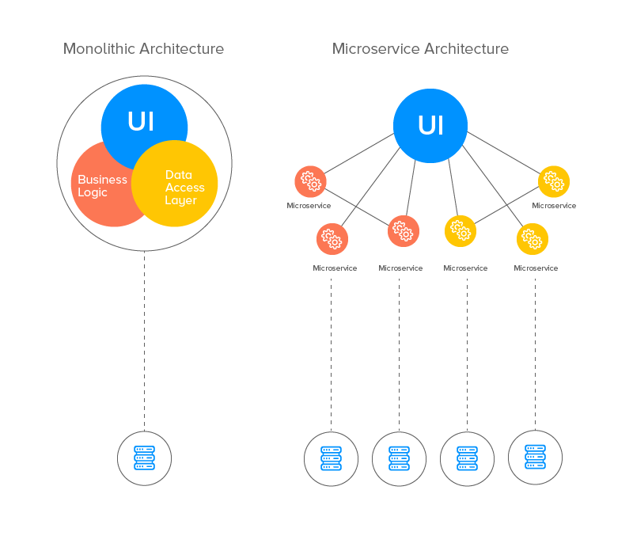

Monolithic vs Agile development
Monolithic approach makes is a single unit software architecture. Able to use only sequential development. While agile approach of software architecture breaks every sevtion apart and makes it modular. This is allowing the system to be fastly developed with better maintence and freqent updates. Every service is controlled by microservice manager. Such services are usually installed seperatelly and together makes one functional aplication.

core principles: Collaboration: Encouraging open communication and teamwork among cross-functional teams. Automation: Harnessing the power of automation to streamline workflows, reducing manual intervention and errors. Continuous Integration and Deployment: Enabling a continuous and automated pipeline for integrating code changes and deploying them swiftly. Monitoring and Feedback: Constantly monitoring systems, gathering feedback, and leveraging insights for continuous improvement. The motto or guiding principle of DevOps often revolves around the concept of "Culture, Automation, Measurement, and Sharing," commonly referred to by the acronym "CAMS."